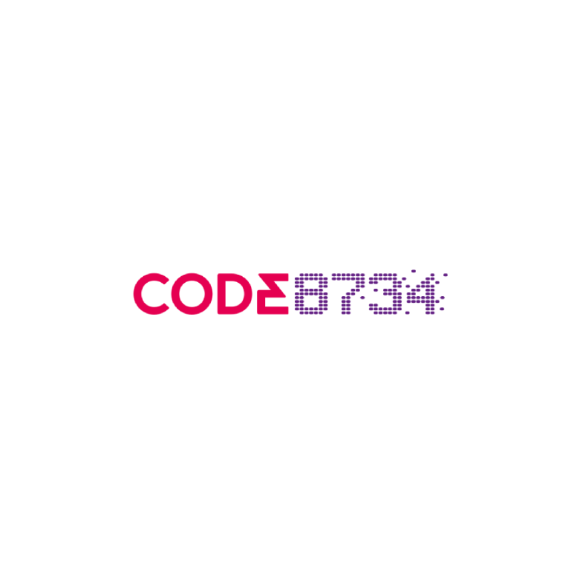

01 / CONSTRUA POSSIBILIDADES
Robótica
Conecte programação e construção para explorar como ideias podem ganhar movimento.
LógicaCriaçãoDesafios
Quero explorar Robótica ↗
CONSELHEIRO LAFAIETE · MGQuero experimentar ↗Da primeira ideia ao primeiro robô. Descubra um universo de possibilidades com Robótica, Games e Informática em Conselheiro Lafaiete.
Quero uma aula experimental ↗Tecnologia para sair do modo espectador
e entrar no modo criador.
Conecte programação e construção para explorar como ideias podem ganhar movimento.
Descubra o que existe por trás da tela e explore a criação de jogos, personagens e novas histórias.
Ganhe familiaridade com o computador e descubra ferramentas para estudar, criar e fazer mais.
A aula experimental é o primeiro passo para conhecer a Code 8734 e descobrir qual caminho desperta mais curiosidade.
Vamos dar o primeiro passo? ↗Escolha entre Robótica, Games e Informática.
Consulte com a unidade os horários e a turma adequada para o aluno.
Conheça a escola e experimente uma nova forma de aprender tecnologia.
Robótica, Games e Informática em Conselheiro Lafaiete, Minas Gerais. Uma nova descoberta começa aqui, na sua cidade.
R. Mal. Floriano Peixoto, 48 · Sl 01 · Centro
Conselheiro Lafaiete – MG · CEP 36406-000
Escolha o curso que mais combina com a curiosidade do aluno e solicite sua aula experimental pelo WhatsApp.
Conte à equipe o que o aluno já conhece. A aula experimental ajuda a descobrir seu interesse e a consultar o caminho mais adequado.
A solicitação informa seu interesse. O dia, o horário e as condições da aula precisam ser confirmados diretamente com a unidade.
Robótica conecta construção e programação; Games explora a criação de jogos; Informática desenvolve familiaridade com ferramentas digitais. Você também pode pedir ajuda para escolher.